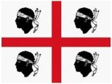
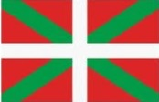

Sobrenome Maidana – Origem, Linhagem Sarda e Basca
O sobrenome Maidana possui duas linhagens historicamente reconhecidas: uma Sarda, originária da ilha da Sardenha (Itália), e outra Basca, proveniente do País Basco. Ambas se consolidaram especialmente na Argentina a partir do século XIX e, mais tarde, chegaram ao Rio Grande do Sul.
Linhagem (Sardenha – Itália)

Sarda em trajes tradicionais
A linhagem Sarda do sobrenome Maidana é sustentada por registros geográficos, linguísticos e documentais originários da ilha da Sardenha.
Topônimos Sardos
Existem referências geográficas contendo o nome Maidana no território Sardo, indicando origem toponímica do sobrenome.
- Località Maidana – Dolianova
Fonte: Google Maps - Ruscello Maidana Manna – curso d’água documentado
Fonte: The Silent Tube
Significado em Língua Sarda
A palavra "maidana" é registrada em léxicos sardos, e no dialeto sardo significa "manjerona".
Fonte: Dicionário Glosbe
Registros de Sardos nativos
Um exemplo documentado é o registro histórico de:
- Cecilia Maidana, nascida em 1870 em Mores, província de Sassari, Sardenha.
- Pais: Sebastiano e Filamena.
- Óbito registrado em 5 de setembro de 1876.
- Certificado nº 50.
Imigração Sarda para a Argentina
Durante o século XIX, famílias sardas imigraram para a Argentina. Entre elas, indivíduos com o sobrenome Maidana:
- José Maydana – sardo, procedente de Gênova. Chegada: 10/02/1856. Navio: Concepción.
- Andrea Maidana – sardo, procedente de Mont.o. Chegada: 06/02/1856. Navio: Constitución.
Fonte: Entradadepasajeros.com.ar
Linhagem do País Basco
Bascos com trajes típicos.
A linhagem Basca do sobrenome Maidana aparece em pesquisas genealógicas argentinas ligada ao sobrenome Maidagan, encontrado no País Basco. Registros indicam que Maidagan teria sido adaptado para Maidana após a migração para a América do Sul.
Há evidências de que alguns bascos migraram para a Argentina ainda antes do século XIX, durante o período colonial espanhol. No século XIX, a migração basca se intensificou, tornando-se uma das mais significativas do país.
A terminação “-ana” é comum em sobrenomes bascos, reforçando uma possível origem linguística, embora a linhagem basca tenha menos documentação preservada que a sarda.
Maidana no Rio Grande do Sul
O sobrenome chegou ao Rio Grande do Sul principalmente por meio de famílias argentinas. Atualmente, não é possível distinguir documentalmente quem descende da linhagem Sarda ou da Basca, devido à miscigenação ocorrida na Argentina no século XIX.
Conclusão
O sobrenome Maidana carrega múltiplas raízes – Sardas e Bascas – com presença marcante na formação social da Argentina e posterior migração para o sul do Brasil. A linhagem sarda possui documentação mais abundante, incluindo topônimos, registros linguísticos, migrações e certidões históricas.
Mapas das Regiões de Origem
Mapa da Itália
Mapa do País Basco